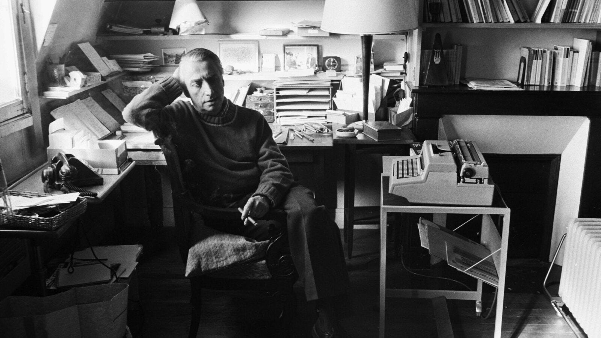

Pausing Music, in the Spirit of Barthes

“There is something to confess: your speaker likes to leave a movie theater.” —Roland Barthes, “Leaving the Movie Theater”
There is something to confess: this listener likes to pause his music. Yes, he likes for the music to stop, for him to return to the more or less empty, more or less quiet room where he listens, a little dazed, a little wrapped up in himself. Yet, he’s sharp, that’s what he’s thinking, his ears having become something sensitive, subtle, the surrounding sounds swollen, psychic suggestions of the music echoing and contaminating the now. In other words, he’s coming out of a certain hypnosis.
Isn’t there such a thing as hypnotic music? My Bloody Valentine was infamous for their loud concerts. They liked to conclude with a crowd favorite, “You Made Me Realise,” extending its final moments to about thirty minutes of seeming-noise that was, in reality, a sustained chord, played at 432 hz and 130 db (the amplitude of a jet engine) so as to induce a meditative or “hypnotic” state. At least, these are the reasons according to frontman Kevin Shields. I have listened to their songs hundreds if not thousands of times, but I was born too late to catch them live. Instead, my music being paused, likely having just listened to a My Bloody Valentine song, I would try to imagine myself as a concertgoer. Really, just how loud could they be? I recall once considering if I could induce this particular hypnosis by playing their music as loud as my technology would permit. I did not realize how loud this would be; upon pressing play, I jumped out of my chair by what felt like a few feet while yanking the headphones out of my ears. In a live setting, such a reflexive reaction would only irritate the surrounding concertgoers. I was left to wonder: Did the audience react similarly, a sort of sea of convulsing bodies? A swarm of people trying to escape the inescapable noise? Well, some tried to escape: My Bloody Valentine was equally infamous for making unwitting concertgoers exit concerts in a frenzy. But for those that remained, the only real explanation is that the hypnosis worked, sound itself mollifying while inducing a psychic state only describable as a high. Just as Kevin Shields intended.
Still, why pause music? To that, this listener asks: Why listen? Except for the case of a specific quest (a selected, sought-for, desired song, or perhaps not a song, but an album, composition, piece), this listener listens to music as a response to idleness, leisure, free time. It is as if, even before he begins listening, the classic conditions of hypnosis were in play: vacancy, need of occupation, lethargy. It’s not immersed in the music and because of the music that he dreams off—it’s without knowing it, even before he becomes a listener. There is a “music situation,” a situation where only music may satisfy its requisites, and this situation is pre-hypnotic. The lack that predicates such a music situation is prefigured by the “reverie” which precedes it, and he travels from mental corner to mental corner with certain proclivities in mind, striving to seek precisely the music that may metamorphose his current situation into a veritable music situation. In short: he feels a certain emptiness; this emptiness is filled by a reverie of desire; and—barring the process of seeking music—this reverie, this desire, pushes the listener to listen; so he falls into hypnosis.
The very fascination of music lies in the act of seeking out the proper song, the music befitting one’s desired music situation. Think of the contrary experience: radio, where music is also played, contains no fascination; here, lack is erased, anonymity amplified; space is familiar, tamed, uniform. Usually, the radio can produce no fascinated listening; conceived to reinforce conformity and ultimately banality, the music of the radio is merely a supplementary instrument of representation; it is meant to integrate itself unobtrusively into its site, and it is undoubtedly detached from its object. Adorno and Horkheimer: “[The radio] is democratic: it turns all participants into listeners and authoritatively subjects them to broadcast programs which are all exactly the same.” Also Adorno and Horkheimer: “If most of the radio stations and movie theatres were closed down, the consumers would probably not lose so very much. To walk from the street into the movie theatre is no longer to enter a world of dream.” To tune the radio is no longer to enter a music situation, one of dreams, but a culture situation. (In a socioeconomic sense, this includes both culture-as-commodity and sound-as-commodity.) The radio disallows any possibility of lack; to listen to the radio means only to be within sound, never without. A music situation requires room for both this within and without.
There is a narrow range—at least for me—in which can function the fascination of music, the aural hypnosis: I must be in the sound, but I must also be elsewhere: a slightly disengaged sound-repertoire, that is what I must have; and through this process I am scrupulous, conscientious, in a word difficult, but that is what I require of the music and of the situation in which I go seeking it. There must be, at least, a certain tension for the music between the within and the without—or, my desired music situation must meet the circumstances wherein I can immerse myself within the music, and, just as readily, immerse myself without the music, for it is within this without that, I argue, the true listening begins.
Music persists by way of music situations. By this, I mean that music relies upon the context within which a listener listens—spatial, material, cultural, psychic, linguistic. It is impossible to divorce true fascinated listening from the context of a veritable music situation. There is always some sort of tension, some sort of dialectical relation happening when a listener listens—and this happening is both a passive and active process, as music is not a synchronic thing, but a series of moments—utterances—perceived as one holistic entity; for we signify what is undeniably many utterances with (usually) one title. This relation doubles with the album.
Music, being comprised of moments, attaches itself to moments. In the same way a smell or taste may elicit a vivid memory, music may carry with it the emotions of a certain past, perhaps a previous iteration of the listener. For instance, at least for this listener, the act of listening to an almost-forgotten song from childhood prompts a nostalgia so vivid that it is nearly painful. Indeed, senses are powerful memory-retrievers, and music enlists the senses. Proust:
The past is hidden somewhere outside the realm, beyond the reach of intellect, in some material object (in the sensation which that material object will give us) which we do not suspect. . . . It is plain that the object of my quest, the truth, lies not in the cup but in myself. The tea has called up in me, but does not itself understand, and can only repeat indefinitely with a gradual loss of strength, the same testimony; which I, too, cannot interpret, though I hope at least to be able to call upon the tea for it again and to find it there presently, intact and at my disposal, for my final enlightenment. I put down my cup and examine my own mind. It is for it to discover the truth. But how? . . . Seek? More than that: create. It is face to face with something which does not so far exist, to which it alone can give reality and substance, which it alone can bring into the light of day.
Like Proust’s tea, music says things that we have no way of interpreting. It also says things that it itself cannot understand. Part of the beauty of music is that much of what it conveys resides in affect, or the general sense and feeling of sound, and not precise meaning. But even this affect is subjective; sound leaves much room for interpretation. Listeners enter into a sort of communion with sound, establishing their own significations with what the music may mean, and the music then assumes whatever the listener desires. That music often contains lyrics does not change this fact.
Sound is a material affair. We have understood this since at least the sixteenth century, when Leonardo Da Vinci discovered that sound travels in waves. But there is a difference between digital and analog sound. I am not one to argue over which sounds better; rather, I am intrigued by the ontological properties of sound as material, music as physical entity, for there is something innately profound about holding a record, particularly a record one has already heard. Holding an already heard record is an affirming experience insofar as it is the closest one can get to physically and psychically experiencing music in its simultaneous form, at once. The same can be said regarding a Spotify window maximized on a computer screen, an album on display, although there is a distance here, as the screen, an interface, displays only a representation of music as it exists in ones and zeros.
Sometimes I stare at my record collection or my Spotify library and feel the weight of the thousands of songs waiting to be listened to, waiting to be heard, teeming with potential. It’s all there. I am stunned by choice.
In these interim moments (or collections of moments), I take stock. Because within and throughout a music situation in its material manifestation, be it that room, that space, that area, is sound. Audible and unperceived, there are always dancing articulations that float through the quiet, as do the dust motes not made visible by the sun. Emanating from within the walls, or beyond them, in some moments they demand attention, and we turn our face toward the vibrations whose imperious jets brush our ears, our skull, our bodies. These articulations are not music—creaking of radiators, dripping of faucets, bustle of streets below or above or just outside, cars, birds, leaves in the wind—but they are also not not-music, for what is music? Isn’t everything music in such music situations? John Cage endeavors to convince you of this in four minutes and thirty-three seconds. In the right psychic and spatial circumstances, the right music situation, we are fascinated—without seeing them head-on, without needing to see, content with the psychic pleasure of sound—by this once-empty aural site, motionless and yet now dancing
Is nothing in this ecstasy provided by sound, music, words?
It is true, in such scenarios, that there is no song playing—and yet, with the right effort, this listener listens fascinated nonetheless. Because it is not only these articulations that he listens to, but the music that he has recently paused, too; the without is contaminated by the within, always; and at least for this listener, he has never once had music not stuck in his head. Sound always overwhelms. In some ways, every situation is a music situation, for he is always immersed in a reverie to a certain extent, and desire—to listen—predicates his thoughts, actions, being.
Pausing music allows one to think about music. I do not think it is possible for one to love a song until they have thought about it. It is possible to undergo the process of falling in love with a song while it is still playing, but it remains a process until the listener intervenes by pausing, and this process can, along with the song, crystallize in the listener’s mind—for as long as it is paused, the song remains one song, not the moment-to-moment experience that constitutes music. One is only attuned to moments while listening. It is in pausing that one can mull over moments in aggregate, collectively, and—finally—fall.